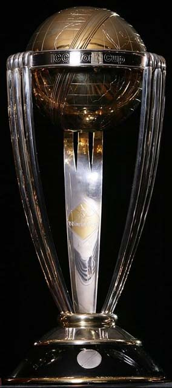

| 1975 | 1979 | 1983 | 1987 |
| 1992 | 1996 | 1999 | 2003 |
| 2007 | 2011 | 2015 | 2019 |

| Participents | Venues | Groups | Qualifiers | Points Table | Knock-outs | Final | Winners | Starts of the Tournament |
Eight teams were invited to compete at the World Cup. Six of those nations were full members of the International Cricket Council (ICC), while the other two – Sri Lanka and East Africa – were invited to fill the remaining two spots. South Africa was meant to be one of the teams in the tournament, but due to the apartheid laws in the country, the team had to withdraw from competing until the 1992 edition.
The announcement of the venues began on 26 July 1973 when the ICC revealed that the tournament would be played with Lord's selected as the venue for the final.The rest of the venues were revealed on 5 November 1974 with the scheduling for the tournament being announced alongside the five county tournaments that would take place during the 1975 season. Headingley and The Oval were confirmed as the semi-final hosts.
| Venue | Seating Capacity |
|---|---|
| Lord's,London | 30,000 |
| The Ovel,London | 23,500 |
| Edgbaston Cricket Ground,Birmingham | 21,000 |
| Old Trafford cricket Ground,Manchester | 19,000 |
| Trent Bridge,nottingham | 15,350 |
| Headingley,Leeds | 14,000 |
Eight teams were separated into two groups namely Group-A and Group-B by zig-zak way of ranking order.
| Group-A | Group-B |
|---|---|
| England | West Indies |
| New Zeland | Australia |
| India | Pakistan |
| East Africa | Sri Lanka |
Each team in a group should compitate other three teams in a group.leauge stages (qualifier) are starts at 07, June,1975 and scheduled to finish on 14,June,1975.
|
Match-01 England vs India |
Match-02 New Zeland vs East Africa |
Match-03 Australia vs Pakistan |
Match-04 Sri Lanka vs West Indies |
|
Match-05 England vs New Zeland |
Match-06 East Africa vs India |
Match-07 Australia vs Sri Lanka |
Match-08 Pakistan vs West Indies |
|
Match-09 England vs East Africa |
Match-10 New Zeland vs India |
Match-11 Australia vs West Indies |
Match-12 Sri Lanka vs Pakistan |
After complition of league (qualifier) stages based on points table top two teams of each group will
qualify to Knock-outs (semi-final) stages.
(won="4"points Tie="2"point loss="0"point)
| Position | Teams | Matches | Won | Loss | Tie | Points |
|---|---|---|---|---|---|---|
| 1 | England | 3 | 3 | 0 | 0 | 12 |
| 2 | New Zeland | 3 | 2 | 1 | 0 | 8 |
| 3 | India | 3 | 1 | 2 | 0 | 4 |
| 4 | East Africa | 3 | 0 | 3 | 0 | 0 |
| Position | Teams | Matches | Won | Loss | Tie | Points |
|---|---|---|---|---|---|---|
| 1 | West Indies | 3 | 3 | 0 | 0 | 12 |
| 2 | Australia | 3 | 2 | 1 | 0 | 8 |
| 3 | Pakistan | 3 | 1 | 2 | 0 | 4 |
| 4 | Sri Lanka | 3 | 0 | 3 | 0 | 0 |
Per format rules top two teams in each group will qualify to Knock-outs stages (semi-final).Thus from Group-A England and New Zeland has qualified into Knock-outs,From Group-B West Indies and Australia has qualified into the Knock-outs.knock-outs stages (two matches) are conducted on 18,June 1975 in two different venues. The winning teams are need to be face each other in final will conduct on 21,June 1975.
|
Match-13 (Semi-finals 01) England vs Australia |
Match-14 (Semi-finals 02) New Zeland vs West Indies |
From Semi Final-01(Match-13) Australia,and from Semi Final -02 (match-14) West Indies were qulified into finals.Final was conduct on 21,June 1975 at Lord's,londan.
|
Match-15 FINAL West Indies vs Australia |
Best match in a world cup history ever until the last moment keep the audience in an edge of seat.The unbeaten West Indies proves their class to the world cricket. Australia loss the match in a narrow margin but good fight against the best team in world cricket.
| Winners | Runners |
| West Indies | Australia |
Great! West Indies has lift the first ICC Mens Cricket World Cup at Lord's,London by defeat England with 5 wickets in hand. There are so many stars are shined in this tournament with following catagories.
| Highest run getter | Glenn Turner (NZ) | 333 runs (4 matches) |
| Highest wicket taker | Gary Gilmour (AUS) | 11 wickets (2 matches) |
| Most centuries | Glenn Turner (NZ) | 2 centuries (4 matches) |
| Most half centuries | Majid khan (PAK) | 3 Half centuries (4 matches) |
| Best score in tournament | Glenn Turner (NZ) | 171* (152 balls) (4 matches) |
| Best bowling figure in tournament | Gary Gilmour (AUS) | 6/14 vs England |
| Most 6's | Alan Turner (AUS) | 3 Sixes (4 matches) |
| Most 4's | Glenn Turner (NZ) | 33 Fours (4 matches) |
| Most cathes | Dennis Amiss (ENG) | 8 cathes (4 matches) |
| Most man of the matches | Glenn Turner (NZ) | 2 MOM (4 matches) |